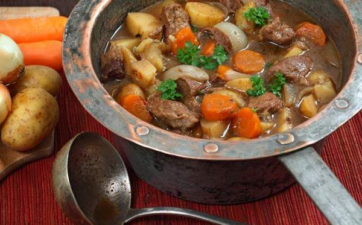

БРИТАНІЯ
Кухня
Кулінарні традиції
Про країну
Печення з ростбіфу - Недільне печення
Англійський суп з яблуками та сиром - Суп

РАГУ ПО-ІРЛАНДСЬКИ - Рагу
Автор сайту Баранецький Михайло 2023 рік
 БРИТАНІЯ Кухня
БРИТАНІЯ Кухня